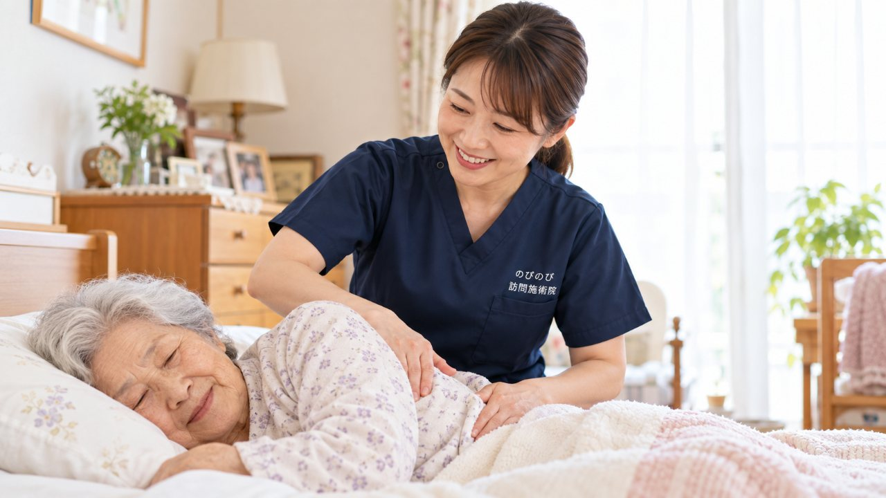

がんとともに家で過ごす日々では、体のこわばりや痛み、むくみ、だるさ、眠りにくさなど、さまざまなつらさが重なりがちです。訪問鍼灸マッサージは、がんそのものを治療するものではありませんが、主治医や在宅の緩和ケアチームの管理のもとで、こわばりやむくみ、だるさをやわらげ、少しでも穏やかに過ごせるよう体を支える役割を担えます。国家資格を持つ施術者が、その日の体調に合わせて力を加減し、無理のない範囲でていねいにケアします。医師の同意書があれば医療保険で受けられ、1割負担の方で1回およそ395円が目安。要介護認定は不要で、介護保険の限度額とは別枠です。痛みの治療は主治医が行うもので、施術はそれを補い暮らしを支えるもの。ここでは、がんの在宅療養で訪問鍼灸マッサージにできることと、気をつける点を整理します。あらわれ方には個人差があり、体調によっては施術を控える判断もします。
この記事のポイント
主治医や在宅の緩和ケアチームの管理のもとで、体調に合わせて無理のない範囲であれば受けられることが多いです。痛みが強い日や体調がすぐれない日は、施術を軽くしたり控えたりします。まずはご相談ください。
がんとともに家で過ごすとき、体に起きやすいこと
がんの治療中や療養中は、体を動かす機会が減り、筋肉や関節が固くなりがちです。同じ姿勢が続くことでの肩や背中のはり、足のむくみ、抜けないだるさ、痛みへの緊張からくるこわばり、眠りにくさなど、いくつものつらさが重なることがあります。
こうした体のつらさに、家にいながら受けられるケアのひとつが訪問鍼灸マッサージです。がんそのものの治療や痛みのコントロールは主治医や緩和ケアチームが行うもので、施術はその暮らしを支え、穏やかな時間を助ける役割になります。
訪問鍼灸マッサージにできること｜こわばり・むくみ・だるさをやわらげる
のびのびの訪問鍼灸マッサージでは、固くなった筋肉をやさしくやわらげ、むくみやだるさ、こわばりに、手技やお灸のあたたかさで働きかけます。強い刺激ではなく、心地よさを大切にした、その方の体調に合わせたケアです。関節が固まらないよう、その日の体に合わせて動かすこともあります。
ねらいは、がんを治すことではなく、体の重さやこわばりをやわらげ、少しでも楽に過ごせる時間をつくること。こわばりがゆるむと呼吸が深くなりやすく、休める姿勢もとりやすくなります。ただし、あらわれ方には個人差があります。
痛みの治療は主治医が｜施術はそれを補う役割
がんの痛みは、主治医や緩和ケアチームが薬などでていねいにコントロールします。訪問鍼灸マッサージは、その治療に置きかわるものではなく、こわばりや緊張、むくみといった体のつらさを軽くして補う役割です。施術で気づいた痛みや体の変化は、医師や訪問看護に共有し、医療につなぎます。
痛みが強いとき、体調がすぐれないときは、施術を軽くしたり控えたりして、決して無理をしません。ご本人の「今日はここまで」という気持ちを最優先に進めます。
むくみ・リンパのケア｜体に合わせてやさしく
がんの療養中は、手術や治療のあと、あるいは動きが減ることで、腕や脚にむくみが出ることがあります。訪問鍼灸マッサージでは、むくみのある部分をやさしくさすり、めぐりを助けるケアを、皮膚や体調に合わせて力を加減しながら行います。リンパ浮腫など専門的な管理が必要な場合は、主治医や看護の指示にそって、できる範囲で寄り添います。
強くもんだり急に動かしたりはしません。むくみの様子に変化があれば、医療に共有します。
在宅の緩和ケアチームとの連携
がんの在宅療養は、主治医や訪問診療、訪問看護、ケアマネジャーなど、多くの専門職がチームで支えます。訪問鍼灸マッサージも、その一員として、体のこわばりやむくみ、だるさをやわらげる役割を担えます。のびのびでは、施術で気づいた体や気持ちの様子を、チームと共有しながら進めます。
ご本人やご家族の「こう過ごしたい」という願いを尊重し、医療の管理のなかで、穏やかな時間づくりのお手伝いをします。ひとりで抱えず、頼れる相手が増えることが、ご家族の安心にもつながります。
料金と保険｜1回およそ395円から、限度額とは別枠
のびのびの訪問鍼灸マッサージは、医師の同意にもとづく医療保険で受けられます。はり・きゅうの場合で1回の総額3,950円、1割負担の方でおよそ395円が目安です。医療保険なので介護保険の限度額とは別枠で、要介護認定も不要です。ふたつの保険がどう分かれているかは「こちらのページ」で説明しました。
対応エリア内であれば出張費や交通費の上乗せはなく、料金は一律。療養で費用がかさみがちな時期でも、無理なく続けやすい負担です。始める前に負担額と回数の見通しをお伝えし、体調に合わせて回数も一緒に決めます。
受けるまでの流れ｜ご本人のペースを大切に
はじめは、対象になりそうかの確認や、体の状態・ご希望をうかがう相談から始められます。医師の同意書の手続きはのびのびが引き受けます。無理な勧誘をしたり、契約を急かしたりすることはありません。体調には波があるため、その日のご本人のペースに合わせ、短い時間からでも始められます。
合わないと感じたら、無理に続ける必要はありません。ご家族だけで抱え込まず、まずは気軽にご相談ください。どんなことができるか、一緒に考えます。
ご家族へ｜穏やかな時間の支えとして
がんとともに過ごすご家族は、心も体も張りつめがちです。ご本人の体のこわばりやむくみがやわらいで、少し表情がやわらぐ。その時間は、ご家族にとっても支えになります。訪問鍼灸マッサージは、そんな穏やかなひとときづくりのお手伝いができればと考えています。
介護するご家族自身の疲れやこりも、よければ一緒にケアできます。数百円で続けられる体のケアが、日々の過ごしやすさや気持ちの支えにつながることもあります。なお、施術は病気そのものを治すものではなく、あらわれ方には個人差があります。
よくある質問
がんがあっても訪問鍼灸マッサージを受けられますか？
主治医や在宅の緩和ケアチームの管理のもとで、体調に合わせて無理のない範囲であれば受けられることが多いです。痛みが強い日や体調がすぐれない日は、施術を軽くしたり控えたりします。まずはご相談ください。
がんの痛みは施術でとれますか？
痛みの治療は主治医や緩和ケアチームが薬などで行います。訪問鍼灸マッサージはそれに置きかわるものではなく、こわばりや緊張、むくみをやわらげて補う役割です。効き方には個人差があります。
費用はどのくらいですか？
医師の同意書があれば医療保険の対象です。はり・きゅうで1回の総額3,950円、1割負担で約395円が目安。介護保険の限度額とは別枠で、要介護認定は不要です。
介護している家族の疲れも一緒にみてもらえますか？
はい。ご本人のケアとあわせて、介護するご家族の肩こりや腰の疲れも、よければ一緒にケアできます。気軽にお声がけください。